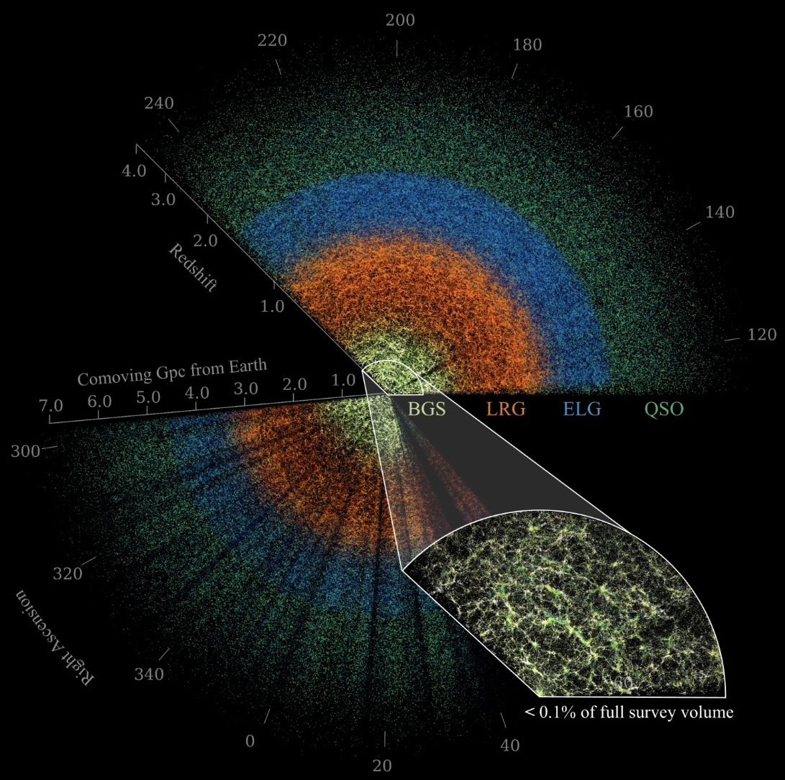

DESI Data Release 1 (DR1)
In May 2021 the Dark Energy Spectroscopic Instrument (DESI) collaboration began a five-year spectroscopic redshift survey to produce a detailed map of the evolving three-dimensional structure of the universe between z = 0 and z ≈ 4. DESI's principal scientific objectives are to place precise constraints on the equation of state of dark energy, the gravitationally driven growth of large-scale structure, and the sum of the neutrino masses, and to explore the observational signatures of primordial inflation.
DR1 consists of all data acquired during the first 13 months of the DESI main survey, as well as a uniform reprocessing of the DESI Survey Validation data previously made public in the Early Data Release. The DR1 main survey includes high-confidence redshifts for 18.7M objects, of which 13.1M are spectroscopically classified as galaxies, 1.6M as quasars, and 4M as stars — making DR1 the largest sample of extragalactic redshifts ever assembled.
In addition to fulfilling its core cosmological objectives with unprecedented precision, DR1 is expected to enable a wide range of transformational astrophysical studies and discoveries.
- Data Release 1 of the Dark Energy Spectroscopic Instrument the DR1 paper (PDF)
- DR1 data access and documentation
